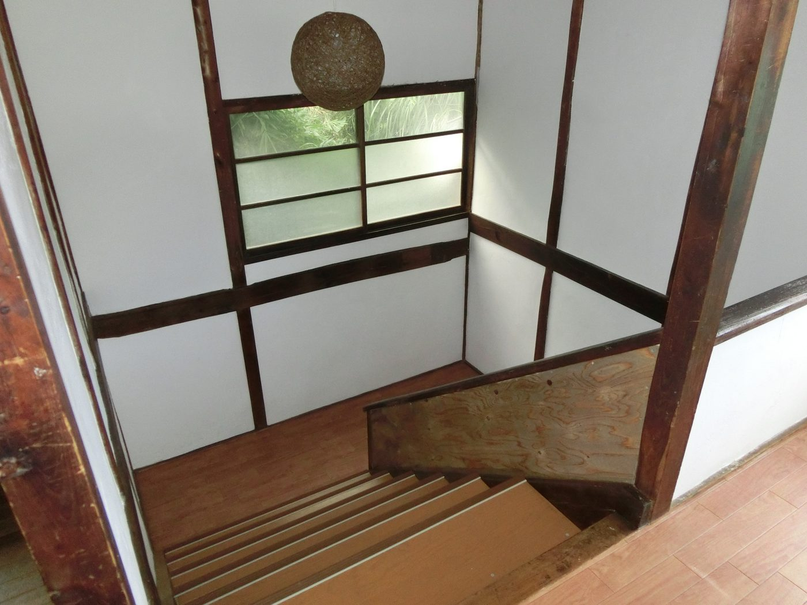

Currently Available · 即入居可
¥50,000 / month
Aotani Apartment
Working in Osaka/Nara but prefer a more spacious, affordable rural place to live?
85 m² 2-story duplex just a 2-minute walk from JR Kawachi-Katakami Station (JR Yamatoji Line / JR大和路線 河内堅上駅) in Kashiwara-shi, Osaka. 2 separate upstairs bedrooms, modern unit bath, ¥0 key money, ¥0 agency fee, no guarantor, Pets OK with conditions.